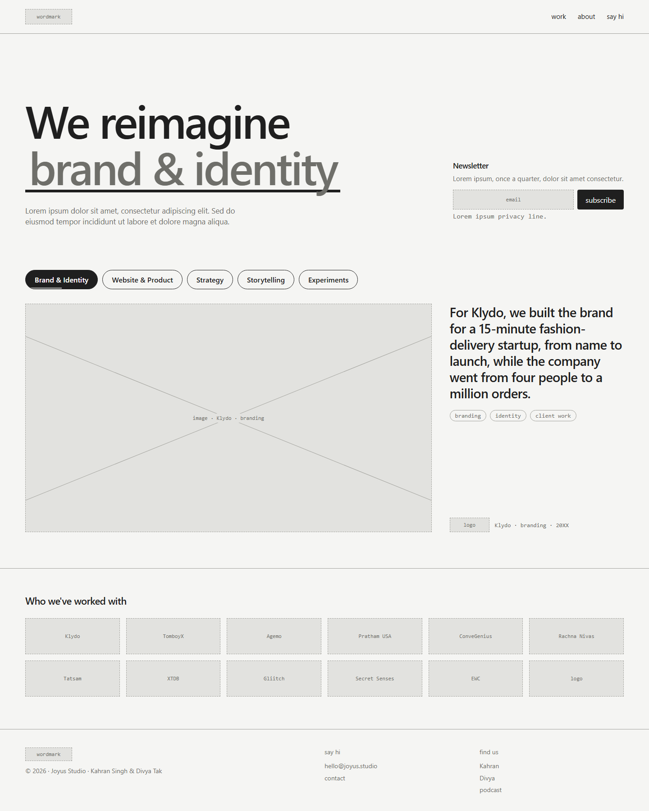

Study 03 · 1 October 2026
What can be clicked, and where it goes
Every clickable thing on the round-4 homepage, where each should lead, and the pages that fall out of that. Nine page types; the next eight studies wireframe them one at a time. The list is data (ia.json), tested against the wireframe it describes (check.cjs).
The homepage, every target numbered

1goes somewhere
5clickable, but stays on the page (or deliberately isn't a link)
Hover a marker for its destination. The full reasoning is in the table below.
The inventory
| # | What | Where | Goes to | Why | Status |
|---|
decided = Divya said so in Study 02 · proposed = my call, open to change · Count:
Five calls that shaped the list
Each one had a real alternative. Named here so they can be overturned one at a time.
| Call | Chosen | Alternative | Why the chosen one |
|---|---|---|---|
| Do pills navigate? | No. On the homepage they switch the panel. On the work index they're filters. | Each pill links to its own category page. | Round 3 removed "see the work"; a pill that leaves the page would bring a link label back in another form. The same filtered list is one click away via work. |
| Tags on the homepage | Plain text. | Each tag links to /work/?tag=…. | They sit inside the panel, which is already one big link. A link inside a link is invalid HTML and, on a phone, a mis-tap. They become links one level down, on the piece page. |
| Client pages | Yes: /work/klydo/ lists all seven Klydo pieces. | No client pages; logos are decoration. | The map is organised by client, and a visitor who recognises "Klydo" on the logo wall is asking "what did you do for them?". The client page is also where the order of pieces over time can be shown. |
| Subscribe | Thanks appears in place; no new page. | A /subscribed page. | A whole page for "thanks" takes them away from the work they were looking at. |
| URLs | Nested: /work/klydo/branding.html under /work/klydo/. | Flat: /work/klydo-branding.html, like today's klydo-cut-design.html. | The address mirrors the structure: delete the last part and you land on the client. Old work/*-cut-*.html URLs redirect through gen-redirects.mjs as the old Squarespace ones already do. |
The pages that fall out
Left: the homepage. Middle: one click away. Right: two clicks away. A dashed box is a state, not a page; a grey one already exists and isn't part of this rebuild.
The 37 pieces, and what already exists for each
A piece page doesn't start from nothing if the site already tells part of its story. Several of today's case-study "cuts" are piece pages in all but name.
| Pill | Client · piece | New URL | Starts from |
|---|
What loses its link
The round-4 nav is work · about · say hi. Today's nav also has Services, Workshops and Podcast. These pages exist and the new IA has to say what happens to them.
| Page(s) | Linked today from | Proposal |
|---|
The test, and what it caught
node studies/iterations/03/check.cjs reads Study 02's rev4.html and checks this list against it: every piece in the wireframe's data is here under the same pill; every nav and footer label has a row; every logo on the wall leads to a client with pieces; every destination is a defined page type; page counts are counted from the data, not typed; every cited source file exists. verify.cjs runs it.
My test was wrong first. Its pattern read each pill up to the first ]}, which closes the first piece's tag list, so it saw 5 pieces instead of 37 and reported 32 false failures. Fixed by slicing at each pill header.
My data was wrong too. I typed 13 client pages; the data has 12. The derived-count check caught it.
Experiments were unreachable. The check noted no homepage element led to an experiment page. True: the panel leads to an experiment page when the Experiments pill is up. Added as the panel's second destination.
Shapeshifter has a piece but no logo on the round-4 wall. Not fixed: whether it belongs there depends on whether Shapeshifter can be named (open question 4).
Next: one wireframe per page type
| Study | Page | How many | URL |
|---|
Then a final study wires all of them together: the homepage with real links, every link resolving.